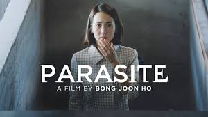
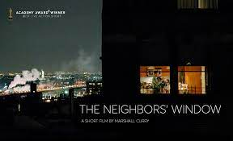
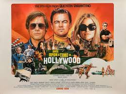
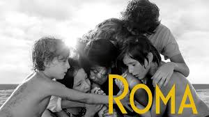
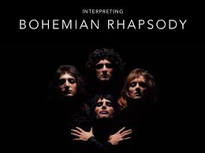
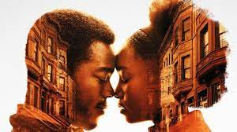
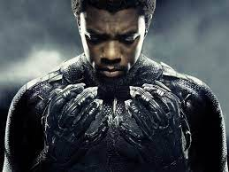
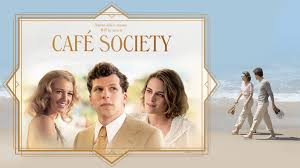
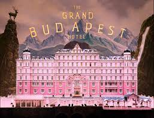
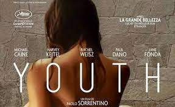

Hollywood Movies to watch in quarantine.
We are aware of that everyone is staying at home due to the global pandemic and all of you
have shifted your regular work patterns to online. Working from your home can take most of your time, but
adding some fun to your daily routine by watching a good movie is also unavoidable part of a self-isolation.
We have picked up 10 movies that are worth watching to help on your movie selection and take you a
historical journey to online movie climate.
Although the 10 movies we selected are not directly related to architecture itself, they tell something more
about their strong interior backdrops, styles and places they were shot. Enjoy the movies!.
1.Parasite(2019)

Parasite is definitely a "must watch" movie which has won four Oscars at the Oscars 2020 for Best Picture, Best
Director, Best Original Screenplay and Best International Feature Film.
Directed by Bong Joon Ho, it is a good example of how a class discrimination is narrated with a dark-comedy.
Greed, class discrimination and a mysterious interloper threaten the newly formed symbiotic relationship between
the wealthy Park family and the destitute Kim clan.
Watch Trailer Now
2. The Neighbors' Window (2019)

If you feel alone, and maybe you feel that much more in these days, this film can be a good example of how
loneliness is reflected on the persona. The film, written & directed by four-time Oscar-nominated filmmaker
Marshall Curry, tells the story of Alli (Maria Dizzia), a mother of young children who has grown frustrated with
her daily routine and husband (Greg Keller).
But her life is shaken up when two free-spirited twenty-somethings move in across the street and she discovers
that she can see into their apartment.
Watch Trailer Now
3. Once Upon A Time…in Hollywood (2019).

Are you Quentin Tarantino lover? Are you fond of slow-motion pictures? The this film is perfect for you if you
imagine yourself making a soft journey over Hollywood.
The film won the Best Supporting Actor by Brad Pitt and Best Production Design at the 92nd Academy Awards. The
film is shot In Los Angeles in 1969, aging TV star Rick Dalton and his longtime stunt double Cliff Booth
struggle to make their way around an industry and a city they hardly recognize anymore.
Watch Trailer Now
4. Roma (2018).

If you like black-white movies, Roma can satisfy you. Directed by Alfonso Cuarón, the 2-hour film looks at a
tumultuous year in the life of a middle-class family in Mexico City in the early 1970s.
Described Alfonso Cuaron’s black-and-white masterpiece, details, time, streets, crafting of scenes are narrated
elegantly and the language of the film is described as "a closer version of the works of the great Italian
neo-realists of the 1940s and ’50s such as Vittorio De Sica and Roberto Rossellini."
Watch Trailer Now
5.Bohemian Rhapsody (2018).

The 2-hour film tells the story of the legendary British rock band Queen and lead singer Freddie Mercury,
leading up to their famous performance at Live Aid (1985).
Directed by Bryan Singer, the film can be a good example of how to create a good movie set, with lines and
style. Sometime details make an incredible movie. If you are a design lover, you will fall in love with the
details and decor.
Watch Trailer Now
6.If Beale Street Could Talk (2018).

The film is based on the novel written by James Baldwin, Moonlight's director. If Beale Street Could Talk is
directed by Academy Award winner Barry Jenkins. The film invites people to explore how we tell stories about
Black people loving each other against the backdrop of racial injustice.
Watch Trailer Now
7.Black Panther (2018).

Black Panther, directed by Ryan Coogler, is a 2018 superhero film, based on the Marvel Comics superhero of the
same name. It is a sequel to Avengers: Age of Ultron and Captain America: Civil War, and the eighteenth film in
the Marvel Cinematic Universe, as well as the sixth film of Phase Three.
The film is described as "the purest expression of Afro-futurism," and a layered science fiction and fantasy
that reflects the African diaspora - to hit cinemas around the world. It's about time."
Watch Trailer Now
8. Cafe Society (2016).

Directed by acclaimed director Woody Allen, Woody Allen's new film "Cafe Society" takes you back to the
Hollywood's Golden Age in the 1930s with much more disaturated, glamorous, but brighter backdrops.
The film captures a specific era of Hollywood at that time after the term Cafe Society come to light in the
1930's-and that time is reflected in the film as diverging aesthetic by the supervision of production designer
Santo Loquasto.
Watch Trailer Now
9. The Grand Budapest Hotel (2014).

A roughly 1-hour comedy-drama, written and directed by Wes Anderson, elaborates the story of tragedy, war,
fascism, nostalgia, friendship, and loyalty. It recounts the adventures of legendary concierge Gustave H. and
Zero Moustafa, the lobby boy who becomes his most trusted friend.
The story involves the theft of a priceless painting; a raging battle for an enormous family fortune; and a
desperate chase on motorcycles, trains, sleds, and skis - all against the back-drop of a suddenly and
dramatically changing Continent.
The film is very assertive in terms of its interiors and its exuberant color palette with textures, saturation,
matte paintings, miniature effect techniques to create different perspectives of scenes, creating the illusion
of size and grandeur. If you want to be in a fully pinkish world and want to be exposed to major miniature
models, you should watch it!.
Watch Trailer Now
10. Youth (2015).

Directed by Italian director Paolo Sorrentino, the 2-hours film is about living and breathing a resort. The film
was mostly shot at Waldhaus Flims Grand Hotel & Spa, elaborating a specific but a very modern, architecturally
minimal spa with a floaty manner.
The film is the director's second English language film, and stars Michael Caine and Harvey Keitel as best
friends who reflect on their lives while holidaying in the Swiss Alps. It turns into a story of the eternal
struggle between age and youth, the past and the future, life and death, commitment and betrayal
Watch Trailer Now
Author: Joseph D'souza.
Posted on 02 June 2020.


Comments